-
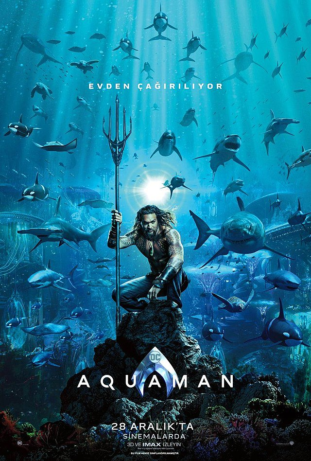
AQUAMAN
Atlantis kraliçesi Atlanna (Nicole Kidman) ile bir deniz feneri bekçisinin oğlu olan Arthur Curry (Jason Momoa), hakkı olan krallıkta hiçbir hak iddia etmeden yer yüzündeki hayatını sürdürmektedir. Atlantis'ten gelen Mera (Amber Heard), onu denizler altındaki ülkeye gelip krallığı alması için ikna etmeye çalışır. Nitekim aynı anneden doğmuş kardeşi Orm (Patrick Wilson) suyun üzerindeki dünyaya savaş açmaya karar vermiştir. Bu savaşı durdurabilecek tek kişi Aquaman'dir.
-
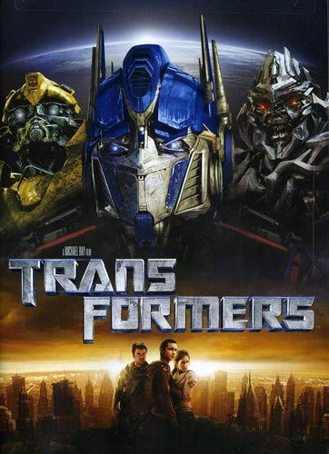
TRANSFORMES
FİLM SERİSİCybertron gezegeni farklı mekanizmalara dönüşebilme yetenekleri olan robotların yaşadığı gezegendir ve iki farklı cepheye bölünmüştür. Bir tarafta Autobotlar denen İyi robotlar ve Decepticonlar adlı kötü robotlar olarak farklı hedeflerin peşinde koşan bu Transformers'lar, gezegenlerindeki Energon Küpleri adı verilen yakıt stoklarının azalması sonucu, uzayda farklı yakıt kaynaklarının arayışı içine girerler. Ve tabii ki bu arayış, kimyasallar ve gerekli yakıt mineralleri açısından son derece zengin olan dünyamıza düşürecektir yollarını. Kolaylıkla otomobillere, uçaklara, deniz taşıtlarına, kamyonlara dönüşebilme yeteneği olan bu robotlar, dünyaya gelerek bu kaynakları ele geçirebilmek için bir savaş başlatacaklardır. Kötü ruhlu robotlar Decepticonlar'ın tek isteği kendi isteklerini elde edebilmek için dünyayı yok etmektir. Tabi yine karşılarında iyi robotlar ve onların başı Optimus Prime'ı bulacaklardır
-
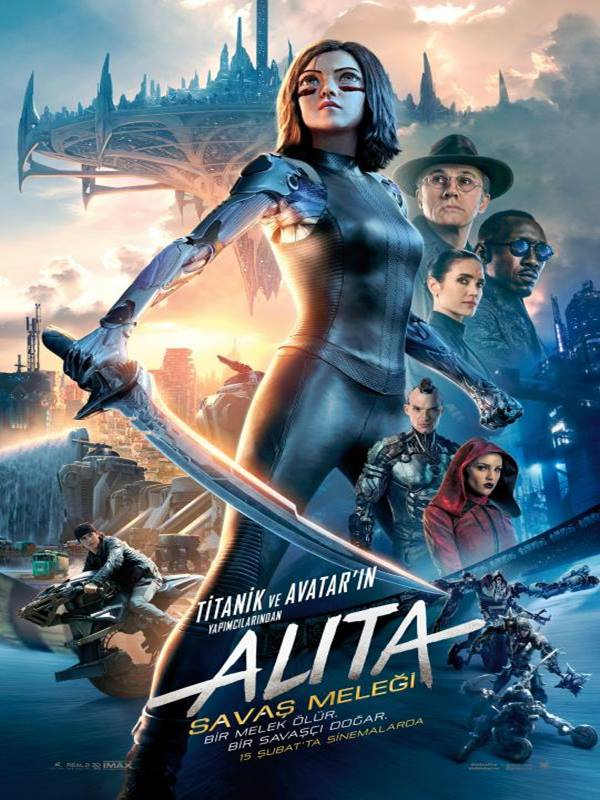
ALITA:BATTLE ANGEL
Alita (Rosa Salazar), kim olduğunu veya nereden geldiğini bilmediği bir halde, tanımadığı bir gelecekte uyanır. Şefkatli bir doktor olan Ido (Christoph Waltz) onu yanına alır ve cyborg görüntüsünün altında olağanüstü bir geçmişe sahip genç bir kadının kalbi ve ruhu olduğunu fark eder. Alita, yeni hayatına alışmaya çalışırken, Doktor Ido da onu gizemli geçmişinden korumaya çalışır. Yeni arkadaşı Hugo (Keean Johnson) ise Alita’nın geçmişini hatırlaması için, anılarını tetiklemesine yardımcı olmak ister. Bu sırada şehri yöneten tehlikeli ve yozlaşmış güçler Alita’nın peşine düşer. Eşi benzeri görülmemiş dövüş yeteneklerine sahip olduğunu fark eden Alita, geçmişine dair bir ipucu elde eder. Tehlikeli insanlarla karşı karşıya olan Alita, arkadaşlarının, ailesinin ve dünyasının kurtarılmasında kilit rol oynayacaktır.
-
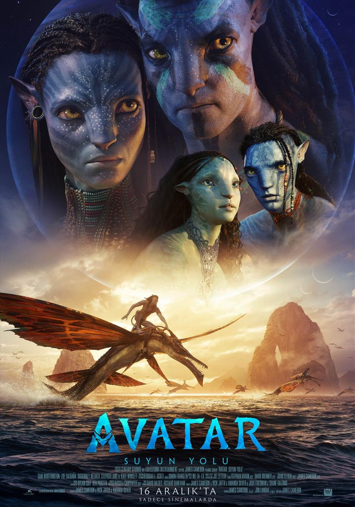
Avatar:THE WAY OF WATER
FİLM SERİSİAvatar serisinin 2009 yılında küresel bir fenomen haline gelen devam halkası; bu defa James Cameron'un yaratmış olduğu öykü evreninin hem kökenlerine iniyor hem de sınırlarını genişletmeyi hedefliyor. Avatar'da yaşanan olaylardan birkaç yıl sonra Jake ve Neytiri Pandora'da kendi ailelerini kurmuştur. Ancak onlar evlerini terk etmek zorunda kalır. Bu yüzden Jake ve Neytiri, suyun yüzeri ve altı dahil olmak üzere Pandora'nın dışındaki yerleri keşfetmeye başlar.
-

FREE GUY
Gerçek Kahraman, açık dünya oyunu olan Free City'de bir arka plan karakteri olduğunu keşfeden bir banka memurunun sıradışı hikayesini konu ediyor. Guy, rutin bir hayat süren ve bir bankada memur olarak çalışan genç bir adamdır. Bir gün genç adam, Free City adında acımasız bir açık dünya oyununda arka plan karakteri olduğunu keşfeder. Bu keşif onun hayatının bambaşka bir hal almasına neden olur. Artık kendi hikayesinin kahramanı olmaya karar veren Guy, sınırları olmayan bu dünyada hayatta kalmak ve diğer karakterleri kurtarmak için zorlu bir mücadeleye girişir.
-

BİRD OF PREY
Yırtıcı Kuşlar, zalim suç lordu tarafından kaçırılan genç bir kızın kurtarılması için verilen mücadeleyi konu ediyor. Gotham'ın kötü adamı Roman Sionis ve yardımcısı Zsasz, genç bir kızı hedef gösterir. Şehirde Cass adındaki genç kızı arayalardan yüzünden büyük bir kaos meydana gelir. Bu durum Harley, Huntress, Black Canary ve Renee Montoya'nın yolunun kesişmesine neden olur. Ekip, genç kızı kurtarmak ve Roman’ı etkisiz hale getirmek için birlikte çalışmak zorunda kalır.
-
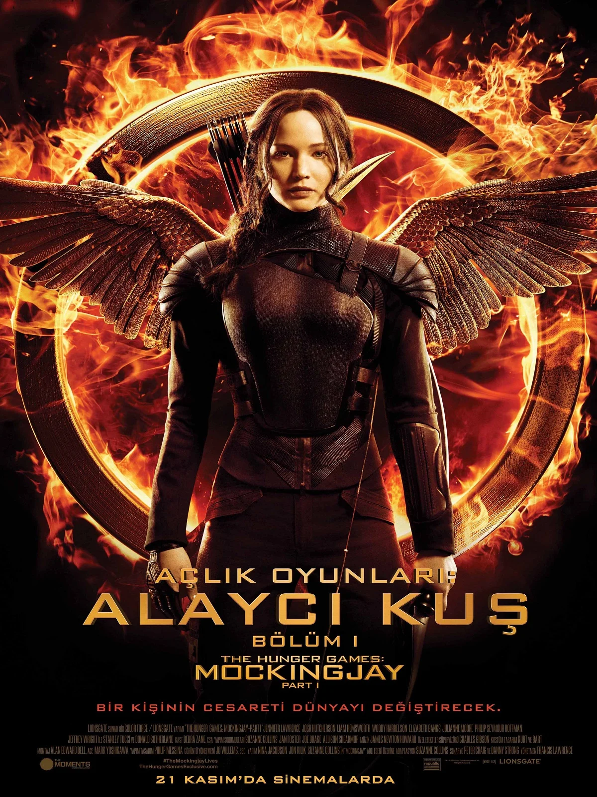
HUNGER GAMES
FİLM SERİSİKatniss Everdeen, evi 12. Bölge'nin tamamen yıkıma uğradığını öğrendiğinde neler olup bittiğini görebilmek için oraya geri döner. Karşılaştığı manzara ise tam anlamıyla dehşet vericidir. Kazananların kaldıkları evler dışında her şey harabeye dönmüş, insanlar artık yeraltında yaşamaya başlamış ve hükümetin ölümcül politikasının karşısında hayatta kalmak için mücadele etmeye başlamışlardır. Nükleer silahların dahi söz konusu olduğu bu atmosferde, Katniss gerçekten de protesto hareketinin yüzü olmaya başlar ve bu sorumluluğu bir türlü kabullenemez. Yükselen bu isyan dalgasının içerisinde yer alamamasının nedenlerinden en önemlisi de Peeta'nın hayatının tehlikede olmasıdır. Büyük bir ilgiyle karşılanan Susan Collins imzalı Açlık Oyunları serisinin üçüncü halkası olan filmin yönetmenliğini, ikinci filmi de yönetmiş olan Francis Lawrence üstlenirken; başrollerde bir kez daha Jennifer Lawrence ve Josh Hutcherson ikilisi yer alıyor.
-
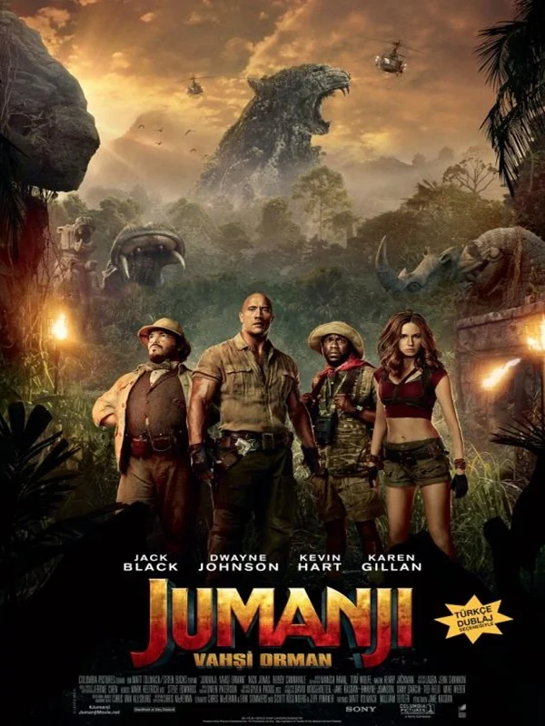
JUMANJI: WELCOME TO THE JUNGLE
Dört sıra dışı arkadaş bir video konsol oyunu bulur. Daha önce kimse bu oyunun adını duymamıştır. Heyecanla oyunu incelemeye başlayan ve oynamaya koyulan dört ergen kendilerini vahşi bir ormanda avatarların bedenlerinin içinde bulurlar. Kısa bir süre sonra Jumanji ile oynadıklarının düşünen çocuklar kendilerinin de bir oyunun içinde olduğunu keşfederler. Sonsuza kadar Jumanji’nin içinde hapsolmamak için hayatların macerasını yaşamak zorundadırlar. 1995 yapımı kült film Jumanji'nin devam halkası olan filmin başrollerini Dwayne Johnson, Jack Black, Kevin Hart ve Nick Jonas üstleniyor. Filmin yönetmen koltuğunda Jake Kasdan otururken, filmin senaryosu ise Scott Rosenberg'e emanet.
-
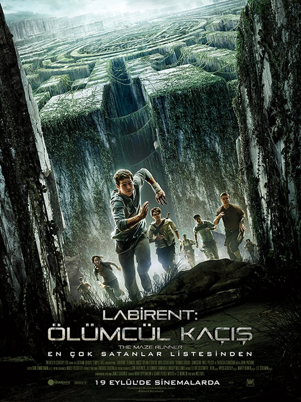
THE MAZE RUNNER
FİLM SERİSİLabirent: Ölümcül Kaçış'ta, Thomas bir anda uyanır ve yukarı doğru hareket halindeki bir asansörde olduğunu fark eder. Asansörün kapıları açılır ve karşısında kendi yaşlarında bir grup genci görür. Koloni gibi görünen bu grup onu bir kayranda karşılamıştır. Devasa büyüklükteki duvarlarla çevrelenen bu geniş alanda Thomas ne kendisini, ne ailesini ne de geçmişini hatırlayamaz. Dahası karşısındaki “Kayranlılar” da tıpkı kendisi gibi buraya nasıl ve neden getirildiklerini bilmemektedirler. Tek bildikleri şey ise her sabah labirente gidilen dev bir kapının açıldığıdır. Güneş batarken ise her akşam kapı kapanır. Üstelik her 30 günde bir asansörle gruba yeni bir genç gelmektedir. Thomas’ın ardındansa beklenmedik bir şekilde, bir hafta sonra asansör labirente Teresa adında bir genç kızı bırakır. Thomas şimdi hem kayran sakinlerinin hem de geçmişte bir yerlerden hatırladığı bu labirentin sırrını çözmeye çalışacaktır… Yönetmenliğini ve senaristliğini görsel efekt alanındaki deneyimi ile tanınan Wes Ball’un üstlendiği filmin genç oyuncu kadrosu ise Dylan O'Brien, Aml Ameen, Will Poulter, Kaya Scodelario, Thomas Brodie-Sangster, Ki Hong Lee, Jacob Latimore, Blake Cooper gibi pek çok isim yer alıyor.
-
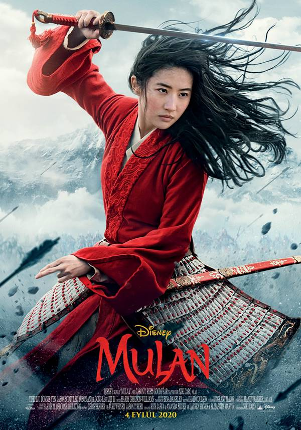
MULAN
Kadınların yalnızca kocasını mutlu edip çocuk doğurmak için var olduğunun düşünüldüğü bir çağda Mulan, seçenekleri konusunda pek mutlu değildir. Çin İmparatoru, her bir ailenin bir erkeğinin, ülkeyi Kuzey istilacılarına karşı korumak için İmparatorluk Ordusunda görev yapması gerektiğine dair bir karar verdiğinde, onurlu bir savaşçının en büyük kızı olan Hua Mulan, hasta olan babasının sağlığı için korktuğundan, onun yerine erkek kılığına girerek savaşa katılıyor. Hua Jun isimli bir erkek olarak orduya katılan Mulan, her adımında içindeki güçten faydalanması ve gerçek potansiyelini benimsemesi gereken zorlu bir mücadeleye girişiyor. Savaştaki yetenekleriyle ön plana çıkan genç kadın, bu süreçte komutanına da aşık oluyor. Bu, onu onurlu bir savaşçıya dönüştürecek, minnettar bir ulusun ve gururlu bir babanın saygısını kazandıracak olan destansı bir yolculuk...
-
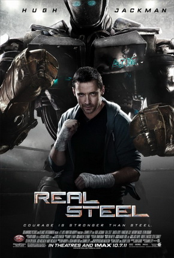
REAL STEEL
Eski organizatörlerden Charlie, hurda metalden kalitesiz robotlar yaparak geçimini sağlamakta ama zorlanmaktadır. Sonunda dibe vurur ve kendisinden ayrı yaşayan oğlu Max ile şampiyonada yarışacak bir boksör bir robot yapıp eğitmek üzere bir araya gelir. Bu vahşi arenada işler ciddiye bindikçe, Charlie ve Max bütün engellere rağmen, ringlere geri dönmek için son bir şans daha elde ederler. Boks sporunun insanlar dünyasından büyük ölçüde ayrılıp, robotların teknolojik dünyasına kaydığı yakın bir gelecekte geçen aksiyon dolu filmin başrolünde X-Men serisinin Logan'ı Hugh Jackman var. 2,5 metre uzunluğunda ve 900 kilo ağırlığında robotlarla insan olarak baş edemeyince kendisi küllerinden bir boksör robot yaratan Charlie Kenton rolünde izlediğimiz Jackman'ın yanı sıra filmin kadrosunda yakın zamanda Ölümcül Tuzak, Kader Ajanları gibi aksiyonlarda seyrettiğimiz Anthony Mackie ve Lost dizisiyle yıldızı parlayan seksi oyuncu Evangeline Lilly de yer alıyor...
-
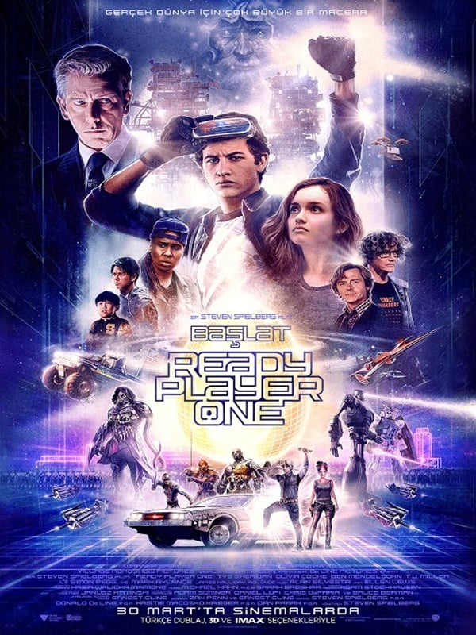
READY PLAYER ONE
Ailesini küçük yaşta kaybeden Wade Watts, gerçek dünyanın sıkıntılarından kaçmak için zamanını The Oasis adlı bir oyun evreninde geçirir. Oyunun milyoner kurucusu oyun evreninin içine bir anahtar saklamıştır ve öldüğünde tüm servetini ve oyunun kontrolünü bu anahtarı bulana vadetmektedir. Wade de bu macera dolu hazine avının peşine düşmüştür. Bir süre sonra her şey bir oyun olmaktan çıkıp acımasız bir rekabete dönüşür. Zira şirket hissedarları ve paragöz oyuncular hazineye herkesten önce ulaşabilmek için diğer yarışmacıları saf dışı bırakmak için her şeyi yapmaya hazırdır... Yönetmenliğini başarılı yönetmen Steven Spielberg'ün üstlendiği ve senaryosunu Ernest Cline'ın kaleme aldığı Ready Player One'ın başrolünde Tye Sheridan ve Olivia Cooke yer alıyor.
-
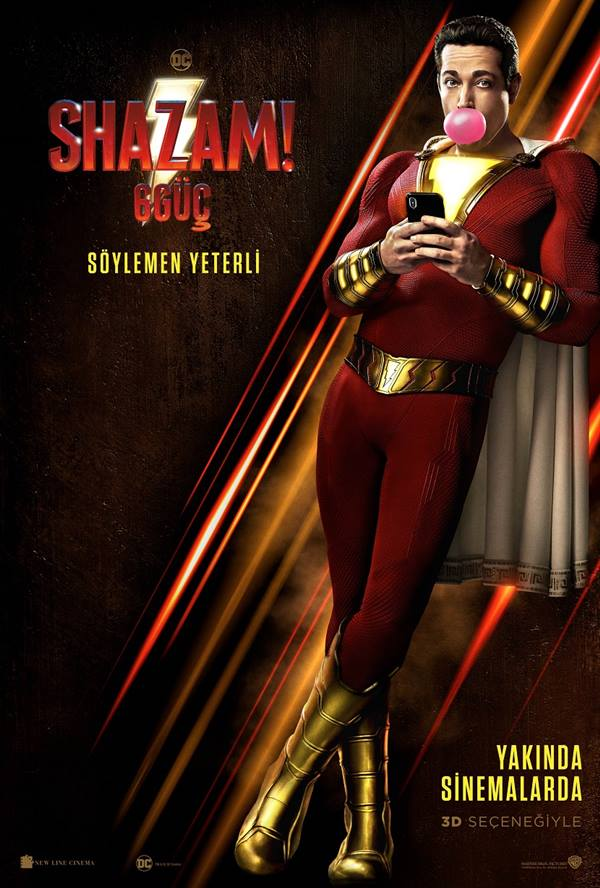
SHAZAM 6 POWERS
Annesini kaybettiğini düşünen Billy evlatlık olarak geldiği evde ki kardeşleriyle gerçek bir aile olur. İyi kalplilik özeliği ile büyücü tarafından seçilen Billy’ye 7 büyük günahın kötülüğüyle savaşması için büyülü süper güçler verilir. Billy böylece "Shazam" olur. İsmini ne zaman söylerse bir süper kahramana dönüşen 14 yaşındaki Billy gücünü kardeşleriyle paylaşarak kötülüğün büyülü güçleriyle savaşır.
-

VENOM
Eddie Brock hırslı bir muhabirdir. Sevgilisinin çalıştığı araştırma firmasının sahibi de peşinde olduğu hikayelerden biridir. Kötü niyetli ve kendi amaçları doğrultusunda hareket eden bu adamın hikayesinin peşinde koşarken, Eddie, sadece simbiyoz hâlinde yaşayabilen ve adrenalinle beslenen uzaylı bir organizmanın firma tarafından keşfedildiğini ve insan deneklerle birleştirilmeye çalışıldığını öğrenir. Ancak araştırmasında fazla ilerleyen Eddie, Venom adı verilen bu organizmanın sıradaki taşıyıcısı olur. Bir yandan vücudunu ve zihnini kontrol altına alan organizmayla mücadele eden Eddie, bir yandan da firma sahibinin kendisini öldürmesi için gönderdiği kişilerden kaçmalıdır...
-
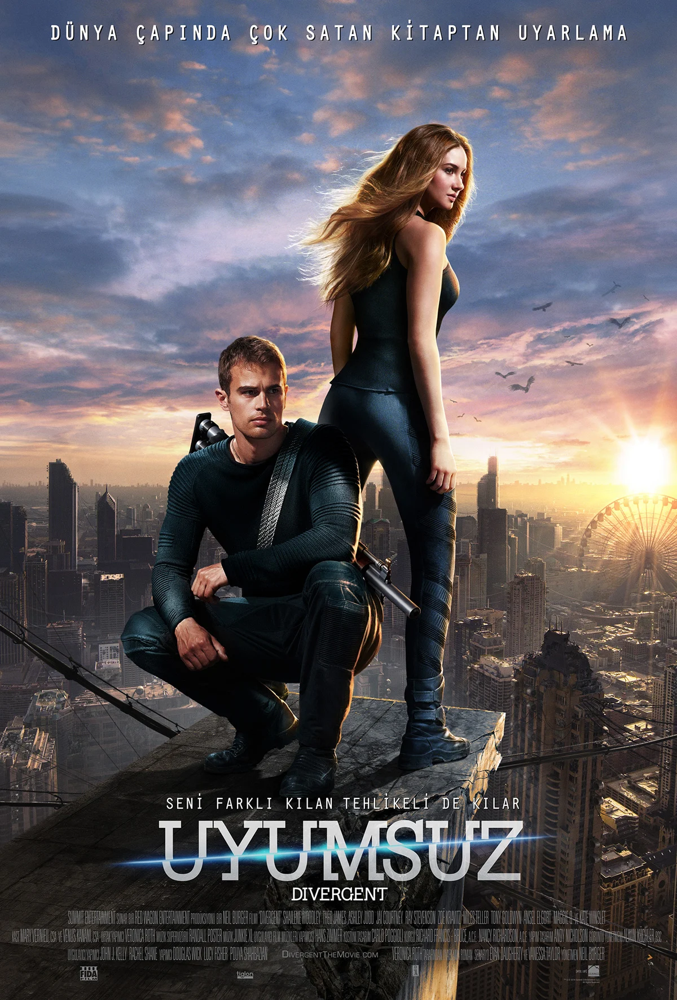
DIVERCENT
Uzak bir gelecekte geçen distopik hikayede insanlık, her biri farklı bir erdemi temsil eden beş farklı parçaya bölünmüş bir düzende yaşamaktadır. İnsanlar 16 yaşına geldiklerinde kendi insani özelliklerine göre bu beş bölümden birine dahil olup ömür boyu bu bölümde yaşamlarını sürdürmektedirler. Tris Prior için de bu kuralı uygulama zamanı geldiğinde kendiyle ilgili büyük bir sırrı keşfeder: Tris, 'uyumsuz'dur ve herhangi bir gruba ait olması mümkün değildir. Asıl sorun ise uyumsuzların bir lider tarafından yok edildiği ve bu yüzden hayatını kurtarabilmek için kaçması gerektiği gerçeğiyle yüzleştiği an ortaya çıkar. Tris bu belalı yolculukta hem hayatta kalabilmek hem de kendisi gibi uyumsuzların bu düzende neden bu denli tehlikeli bulunduklarını öğrenebilmek için Four adlı gizemli bir yabancıya güvenmek ve onunla işbirliği yapmak zorunda kalır.